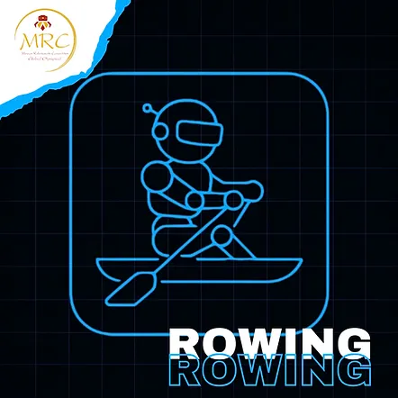
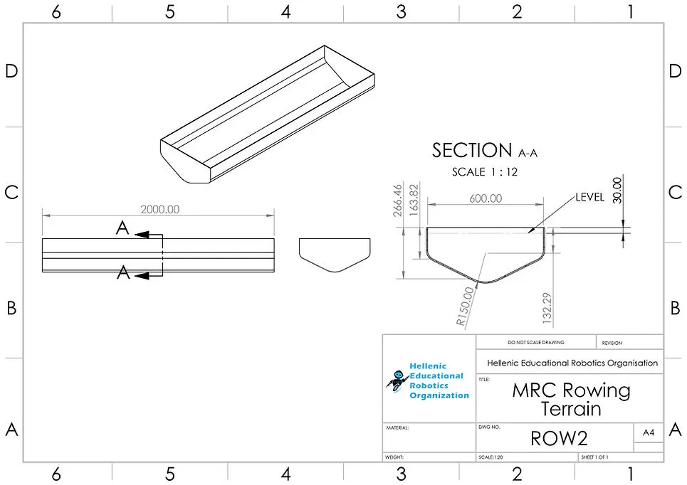
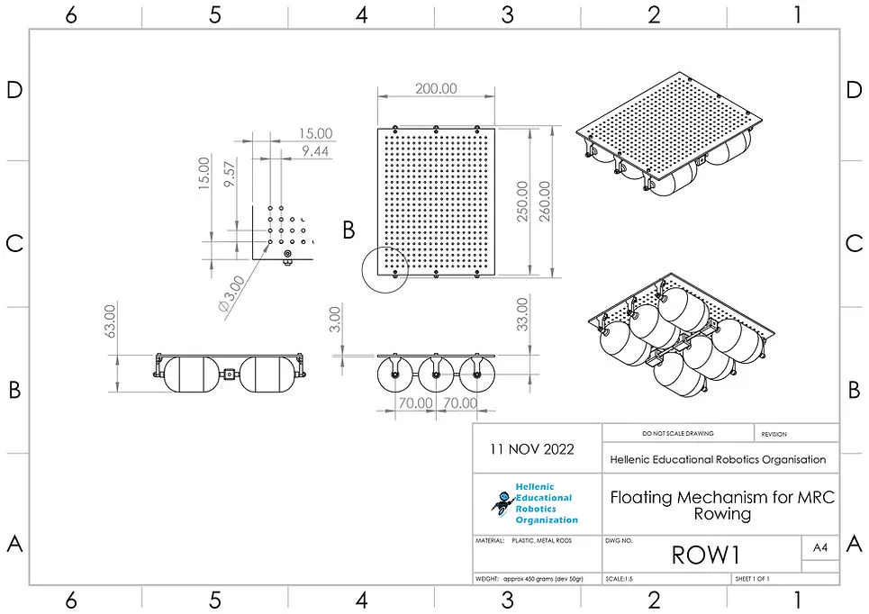

https://www.youtube.com/embed/OpZbV8LyT_c
https://www.youtube.com/embed/OpZbV8LyT_c?autoplay=0&mute=0&controls=1&loop=0&origin=https%3A%2F%2Fwww.he-ro.gr&playsinline=1&enablejsapi=1&widgetid=1&forigin=https%3A%2F%2Fwww.he-ro.gr%2Fmrc-rowing&aoriginsup=1&vf=2
兒童組 (10至12歲 / 國小)
青少年組 / 青年組 (12歲以上至18歲 / 國中及高中)
⚠️ 本項目僅設一個級別：
所有類型的機器人同場競技。
🚨 各年齡組別分別進行比賽。
⚠️ 第零條規則 – 零容忍原則與常識
在所有運動項目中，均適用第零條規則，其內容如下：
➤「如果您不確定某件事是否被允許，那麼它很可能是不被允許的。」
所有規則皆基於常識、運動精神以及所有參與者的安全。
任何蓄意曲解、違反規則本意，或試圖利用灰色地帶獲取不公平優勢的行為，將不被容忍，並可能導致隊伍被取消比賽資格。
機器人划船手的目標是以最短的時間行駛 4 公尺的距離。
⚙️ 機器人運動員要求 – 規格
1. 機器人運動員必須是自主運作的。
2. 其最大尺寸必須為 20 公分 x 25 公分，重量和高度不限。
3. 為確認上述規格，機器人將被秤重，並且必須能舒適地放入檢測箱中。
➤ 檢測箱尺寸為 20 公分 x 25 公分，另有正負二 (2) 公釐的公差。
4. 機器人運動員應在不施加壓力的情況下放入檢測箱。
5. 機器人運動員不得磨損或損壞賽道，或以任何方式對觀眾構成威脅。
6. 為安全起見，機器人運動員必須具備啟動和停止按鈕。
7. 機器人運動員的啟動應透過筆記型電腦或控制器進行，以避免在賽道內產生波浪。➤ 請注意，這是指按下程式的「執行」鍵，而非將其用作控制器來控制機器人運動員的移動。
8. 機器人運動員必須具有防水底座，最大尺寸為 20 公分 x 25 公分。
9. 為便利隊伍，MRC 已設計並將提供特殊底座，含稅價格為 49.60 歐元，隊伍可在其上建造機器人。隊伍也可以使用任何他們想要的材料建造自己的底座。
10. 隊伍必須確保其機器人運動員免受水的損害。
11. 主辦單位對機器人在整個比賽過程中（無論在賽道上或賽道外）可能遭受的任何損壞不承擔任何責任。
12. 機器人運動員應僅有 2 支槳，因為它旨在模擬划船運動員。每側僅可使用一 (1) 個塑膠或木製湯匙或類似物作為槳。其長度不得超過 15 公分。
13. 機器人運動員應至少有 2 個壓力感測器，一個在前方，一個在後方。
14. 無論機器人類別，僅允許使用 1 個處理器、4 個馬達和 4 個感測器。
🧪 技術檢查
🏟️ 場地
賽道及其尺寸如下方圖片所示。


🏆 比賽
⏱️ 準備
🏁 開始 – 比賽流程
1. 裁判將開始倒數 3、2、1，出發。
2. 機器人運動員應在接下來的 5 秒內啟動。
3. 若機器人在此時間內未啟動，裁判將僅給予一次重新啟動機會。這僅適用於機器人運動員的第一次嘗試。
4. 機器人運動員必須盡快移動到賽道末端，觸碰終點線後，反向返回起點。為此，它需要配備壓力感測器。未觸碰划船賽道末端的機器人運動員不得反向移動。
5. 若機器人運動員在五 (5) 秒內未開始移動，則該次嘗試視為失敗。
6. 機器人運動員（或其任何部分）不得超出賽道邊界。若發生此情況，則該次嘗試視為失敗。
7. 若機器人運動員在嘗試中被取消，裁判將記錄時間為 180 秒 (180)。
🔁 回合 – 嘗試
❌ 嘗試結束
1. 當機器人觸碰反向起點區域的賽道牆壁時，計時停止。
2. 機器人應能在壓力感測器受到壓力後自行停止。
3. 若該回合超過 2 分鐘，則裁判結束該回合並宣告無效。
⚠️ 注意：
由於本項目鼓勵創造盡可能接近人體運動和體育運動動作的機器人，槳的運動必須複製划船運動員的划槳動作。運動不得是旋轉式的，而必須完全是您可以在下方影片中看到的動作。
若在技術檢查期間發現任何機器人運動員的動作未模擬下方動作，將被取消該項目的資格。
影片：
🟥 隊伍取消資格
在以下情況下，隊伍將被取消比賽資格並必須退出：➤ 隊伍的成績將不予計算，也不會出現在官方比賽排名中。
✅ 允許 / ❌ 禁止
✅ 允許：
❌ 禁止：
🏆 獲勝者
每個年齡組別的前 3 名獲勝者是以最短時間完成路線的運動員。
最佳時間用於決定以下名次：
🥇 第一名 🥈 第二名 🥉 第三名
若出現平手，則考慮隊伍先前的最佳時間，依此類推。